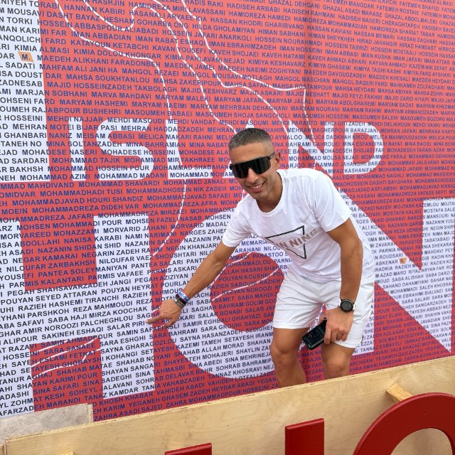
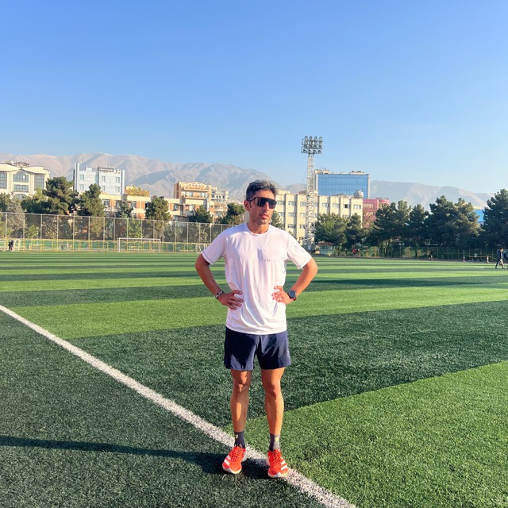
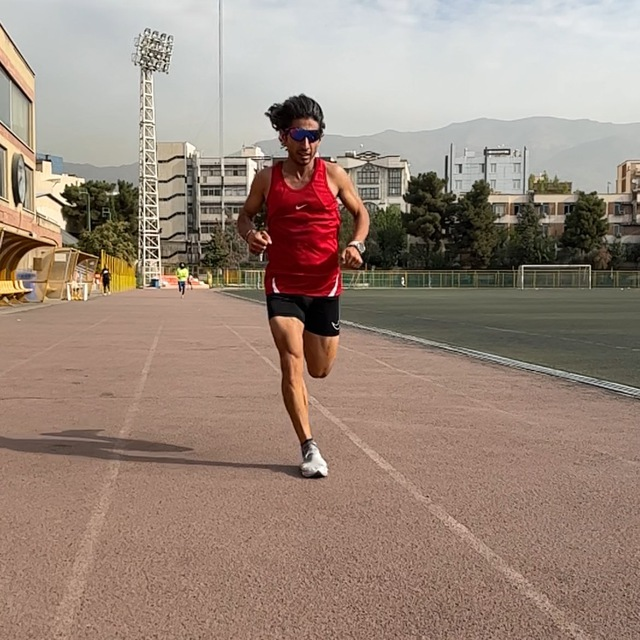
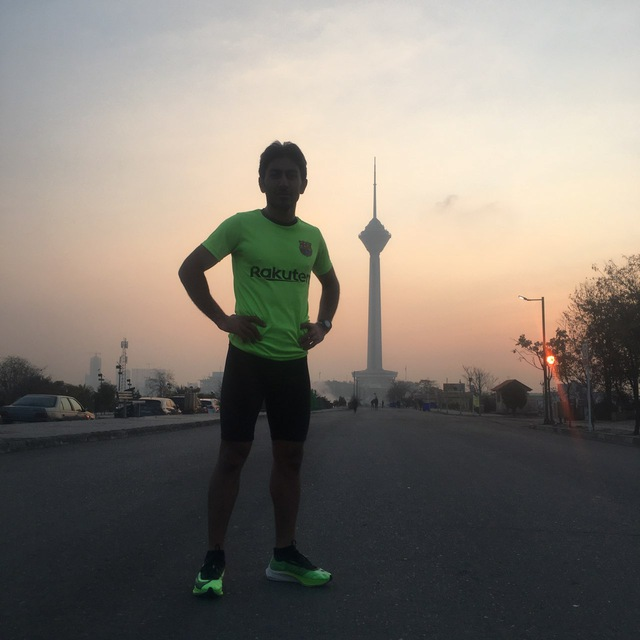
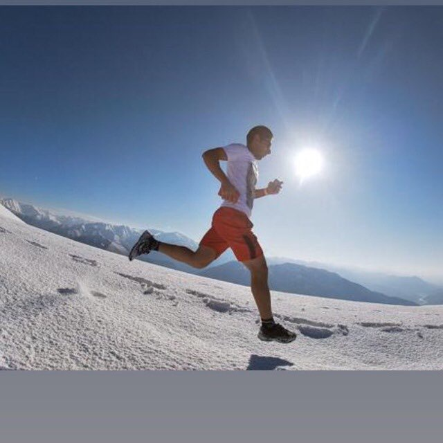
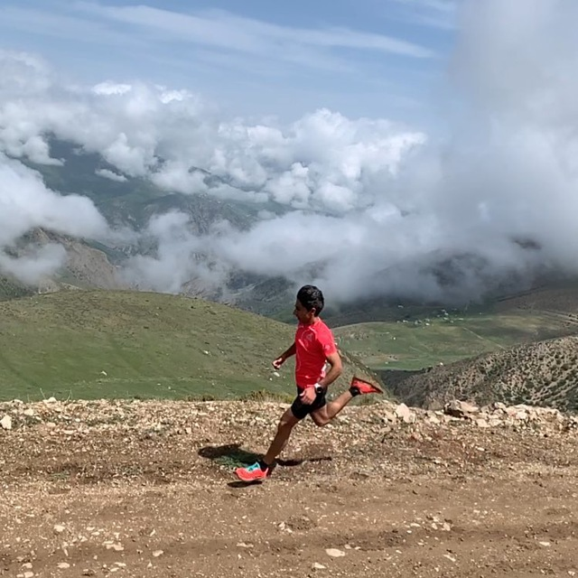

تیم دو جیران · تهران
سالار پیری
مربی دو استقامت و اولترا ماراتن — عاشق دویدن، عاشق کوه. از برترین دوندگان اولترای ایران.
- ۲:۳۴:۵۳ رکورد ماراتن
- UTMB ۷۳۹ بهترین امتیاز
- رتبه ۹ ITRA ایران

دربارهی مربی
یکی از بهترین مربیهای دو در ایران
سالار پیری با سالها تجربه در دو استقامت و اولترا ماراتن، در کنار کسب مقامهای ملی و بینالمللی، مربیگری تیم جیران را برعهده دارد. رویکرد او تمرین اصولی، پایدار و متناسب با توانایی هر دونده است — از تازهکار تا حرفهای.
رکورد شخصی ماراتن او ۲ ساعت و ۳۴ دقیقه، نیمهماراتن ۱:۱۴:۵۰ و ۱۰ کیلومتر ۳۴:۳۹ است. تا امروز بیش از ۳۳٬۴۵۹ کیلومتر در استراوا ثبت کرده و در رنکینگ رسمی ITRA با ایندکس عملکرد ۷۰۶ در جایگاه نهم ایران قرار دارد.
در مسابقات جهانی UTMB نیز دو بار روی سکو ایستاده — از جمله رتبهی دوم Uludag Premium Ultra Trail در ترکیه (۲۰۲۴) با امتیاز UTMB ۷۳۹.
فلسفهی تمرین سالار: «هر دونده یک برنامهی مخصوص خودش دارد.»
آمار تمرین
اعداد از استراوا
آمار بهروزرسانیشده از پروفایل استراوا — رکوردها، حجم تمرین هفتگی و طولانیترین دوی سال.
افتخارات
مسابقات و مدالها
UTMB و ITRA: بهترین امتیاز UTMB ۷۳۹ (۲ سکوی بینالمللی)، و رتبهی نهم ایران در ITRA با ایندکس عملکرد ۷۰۶ (سطح Advanced 1، گروه سنی ۲۳–۳۴).
تمرین گروهی
کلاسها هر روز ساعت ۶ صبح
تمرین گروهی روزانه در نقاط مختلف تهران و اطراف. برای هر دونده، برنامهی اختصاصی نوشته میشود.
ورزشگاه کشوری
تهران
پارک یاس فاطمی
تهران
لواسان
حومهی تهران
گردنهی قوچک
جادهی لواسان
درکه
شمال تهران
بوستان ولایت
تهران
گالری
لحظههای تمرین و مسابقه






عضویت
به تیم جیران بپیوند
چه تازه شروع کردهای، چه دنبال رکورد شخصی هستی — با ارسال پیام در واتساپ، شروع کن. سالار برای شرایط، هدف و برنامهی روزانهات، تمرین اختصاصی مینویسد.
پاسخ معمولاً در کمتر از ۲۴ ساعت.
+98 912 888 9975